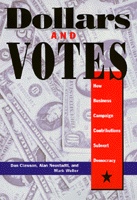

How does the campaign finance system really work—and why do corporate executives say they contribute?
How does the campaign finance system really work—and why do corporate executives say they contribute?


 How does the campaign finance system really work—and why do corporate executives say they contribute?
How does the campaign finance system really work—and why do corporate executives say they contribute?

|  |
Dollars and VotesHow Business Campaign Contributions Subvert DemocracyDan Clawson, Alan Neustadtl and Mark Wellerpaper EAN: 978-1-56639-626-4 (ISBN: 1-56639-626-3) |
"This is quite simply the best book ever written about campaign finance in America. The extensive interviews with corporate government relations people that form the main evidential basis of the book are stunning in their candor and what they reveal about corporate intentions. No journalist or social scientist will be able to talk about campaign finance in the future without coming to terms with this splendid book."
—Edward S. Greenberg, Political Science, University of Colorado, Boulder
Recent scandals, including questionable fund-raising tactics by the current administration, have brought campaign finance reform into the forefront of the news and the public consciousness. Dollars and Votes goes beyond the partial, often misleading, news stories and official records to explain how our campaign system operates. The authors conducted thorough interviews with corporate "government relations" officials about what they do and why they do it. The results provide some of the most damning evidence imaginable.
What donors, especially business donors, expect for their money is "access" and access means a lot more than a chance to meet and talk. They count on secret behind-the-scenes deals, like a tax provision that applies only to a "corporation incorporated on June 13, 1917, which has its principal place of business in Bartlesville, Oklahoma." After a deal is worked out behind closed doors, one executive explains, "it doesn't much matter how people vote afterwards."
Ordinary contributions give access to Congress; megabuck "soft money" contributions ensure access to the President and top leaders. The striking truth revealed by these authors is that half the soft money comes from fewer than five hundred big donors, and that most contributions come, directly or indirectly, from business. Reform is possible, they argue, by turning away from the temptation of looking at specific scandals and developing a new system that removes the influence of big money campaign contributors.
Excerpt available at www.temple.edu/tempress
"Clawson et al, redefine the campaign finance reform debate with Clean Money Campaign Reform—the sweeping solution raging through the states. If anyone doubts its potential as federal reform, they must read the arguments for it in this book. No thinking person can be against it."
—Ellen S. Miller, Executive Director, Public Campaign
"Indispensable for engaged citizens and serious analysts. Virtually every federal Government issue deeply affecting people's lives is not damagingly skewed by the way big special-interest election money dominates our politics. Understanding just how dollars currently beat voters is the needed first step toward mobilizing forces for change and toward restoring American democracy."
—Paul Wellstone, U.S. Senator
"This is the definitive study of the growing importance of business money in contemporary electoral politics. Clawson, Neustadt and Weller put to rest the obfuscations that have prevented effective reform. As Lincoln Steffens showed for machine politics, they demonstrate that the problem is rooted in the deep pockets of a business community that systematically seeks to dominate our political system."
—Frances Fox Piven, author of Regulating the Poor
"This is something extremely rare, a book that is up-to-date and a major contribution to political sociology. Anyone who cares about the future of democracy should read this book and contend with its arguments."
—Fred Block, Sociology, University of California, Davis
"This sharply critical and well-researched diatribe on the evils of Political Action Committees (PACS) leaves readers with a clearly defined battle line between business and government."
—ForeWord
"The authors interview dozens of corporate officials who candidly—and often amusingly—describe their dollars at work."
—Sierra
Preface
1. Follow the Money
2. Gifts: Networks of Obligation
3. Access: Loopholes as a System
4. Soft Money and the Pay-per-View Presidency
5. Ideology and Political Shifts
6. PACs Running in Packs
7. Scandal or System?
Notes
Index
 | Dan Clawson, Professor of Sociology, University of Massachusetts, Amherst, is the author of Bureaucracy and the Labor Process and past editor of Contemporary Sociology. |
 | Alan Neustadtl, Associate Professor of Sociology at the University of Maryland, is the co-author (with Dan Clawson and Denise Scott) of Money Talks: Corporate PACs and Political Infuence. |
Mark Weller teaches sociology at San Jose State.
Political Science and Public Policy
Sociology
General Interest
© 2015 Temple University. All Rights Reserved. This page: http://www.temple.edu/tempress/titles/1424_reg.html.